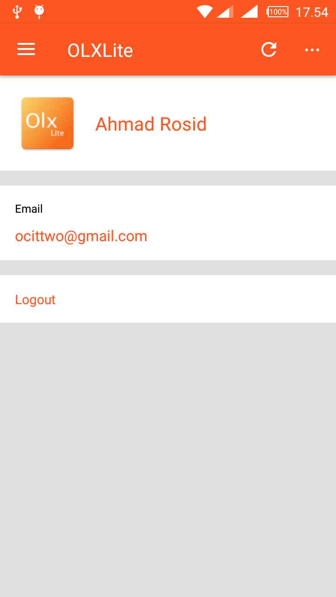
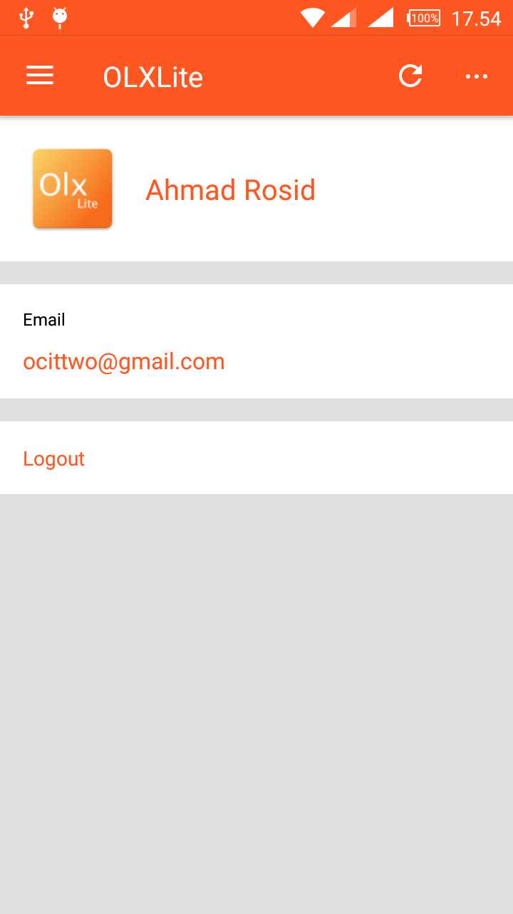

Image: OLXLite Android app.
Selamat datang pada Codelabs kali ini kita akan belajar bagaimana cara membuat action pada google Assistant.
Apa yang akan kamu bikin?
- Pengguna dapat memulai percakapan dengan secara eksplisit memanggil Aksi Anda berdasarkan nama, yang kemudian merespons dengan pesan ucapan.
- Setelah berbincang, pengguna diminta untuk memberikan warna favorit mereka. Your Action mem-parsing input pengguna untuk mengekstrak informasi yang dibutuhkan (yaitu, parameter warna).
- Jika warna disediakan, Tindakan Anda memproses parameter warna untuk membuat "angka keberuntungan" secara otomatis untuk mengirim kembali ke pengguna dan percakapan berakhir.
- Jika tidak ada warna yang disediakan, Tindakan Anda akan mengirimkan petunjuk tambahan kepada pengguna sampai parameter tersebut diekstraksi.
- Pengguna dapat meninggalkan percakapan secara eksplisit kapan saja.
Apa yang akan kamu pelajari?
- Memahami bagaimana Actions bekerja.
- Bagaimana cara membuat projek di Actions Console.
- Bagaimana membuat Dialogflow agent.
- Bagaimana melakukan training Dialogflow.
- Bagaimana cara Test Assistan pada Actions Console Simulator.
- Bagaimana menggunakan Dialogflow slot-filling and system entities.
- Bagaimana mengimplementasikan Action fulfillment menggunakan Action pada Google client library dan pada Dialogflow inline editor.
Apa yang kamu butuhkan
Tool harus menyesuaikan environmentmu:
- Web Browser, seperti Chrome.
Optional: Get the sample code
You can optionally get the full project code for this codelab from our GitHub repository.
Jadi, bagaimana cara kerja Action?
Untuk memulai percakapan, pengguna perlu menjalankan Tindakan Anda melalui Asisten. Pengguna mengatakan atau mengetik frasa seperti "Hai Google, bicara dengan Google IO 18". Ini memberitahu Asisten nama Action untuk diajak bicara. Dari titik ini dan seterusnya, pengguna berbicara dengan Tindakan Anda dan memberikannya masukan. Percakapan ini berlanjut sebagai dialog dua arah hingga tujuan pengguna terpenuhi atau percakapan telah selesai..
From this point onwards, the user is talking to your Action and giving it input. This conversation continues as a two-way dialog until the user's intent is fulfilled or the conversation is finished.

Mari kita lihat apa yang terjadi di balik layar selama percakapan:

- Tindakan Anda sepenuhnya dijalankan di awan, bahkan ketika pengguna berbicara dengan mereka di ponsel, perangkat rumah pintar, atau jam tangan mereka.
- Setiap Tindakan mendukung maksud tertentu dan memiliki pemenuhan yang sesuai yang memproses maksud tersebut.
- Perangkat pengguna mengirimkan ucapan pengguna ke Asisten Google, yang mengarahkannya ke layanan pemenuhan Anda melalui permintaan HTTP POST..
- Pemenuhan Anda menghasilkan respons yang relevan dan mengirimkannya kembali ke Asisten, yang akhirnya mengembalikannya kepada pengguna.
Anda membuat action dengan membuat sebuah Action project dan mendefinifinisakknya dengan dua hal untuk setiap action : intent and the fulfillment.
Bagian codelab ini menjelaskan bagaimana Anda mengatur proyek Tindakan Anda di Actions Console.
Mengecek izin pengaturan Google
Untuk menguji Tindakan yang akan Anda buat untuk codelab ini, Anda perlu mengaktifkan izin yang diperlukan.
- Pergi ke ‘Activity Controls' page (https://myaccount.google.com/activitycontrols).
- Sign in dengan Google account anda.
- Pastikan bahwa izin berikut diaktifkan: :
- Web & App Activity
- Device Information
- Voice & Audio Activity
Membuat Actions project
Actions projects menganfung nama actionmu dengan meta data (name, description, category) yang ada pada milikmu Actions directory listing.

Untuk memulai membuat Actions, pertama anda perlu membuat action projek seperti berikut :
- Open Actions Console.
- Click pada Add/import project.
- Ketikan pada Project name, seperti "actions-codelab".

- Click Create Project.
- click Skip Pada kanan halaman

- Click Build > Actions pada kiri navigasi.
- Click Add first Action mu.
- Memilih paling tidak 1 bahasa , untuk kali ini rekomendasi memakai bahasa inggris
- pada Custom intent card, click Build. Akan membuka Dialogflow Console pada tab baru.

Bagaimana Action bekerja dengan dialogflow
Anda mungkin bertanya-tanya bagaimana Asisten mem-parsing makna semantik input pengguna (seperti ucapan lisan). Ini dilakukan melalui pemahaman bahasa alami (NLU), yang memungkinkan perangkat lunak Google untuk mengenali kata-kata dalam ucapan.
Untuk Tindakan Anda sendiri, Google menyediakan layanan yang disebut Dialogflow untuk membiarkan Anda menangani NLU dengan mudah. Dialogflow menyederhanakan tugas memahami masukan pengguna, mengekstraksi kata kunci dan frasa dari masukan, dan mengembalikan tanggapan. Anda menentukan bagaimana semua ini bekerja dalam agen Dialogflow.

Create a Dialogflow agent
Sekarang setelah Anda membangun proyek Tindakan Anda, buat agen Dialogflow dan kaitkan dengan proyek Anda:
- Setelah mengikuti langkah-langkah di atas, Anda seharusnya sudah berada di Dialogflow Console dengan nama proyek Tindakan Anda di bagian atas. Anda mungkin perlu mengotorisasi Dialogflow untuk menggunakan akun Google Anda, dan menerima Ketentuan Layanan.
- Click Create.

Jika penciptaan agen berhasil, Anda akan berada di halaman Intents. Anda sekarang dapat mulai menyesuaikan bagaimana agen Dialogflow Anda menanggapi permintaan pengguna.
Membuat welcome intent
Setiap proyek Tindakan harus memiliki maksud selamat datang yang bertindak sebagai titik masuk bagi pengguna untuk memulai percakapan. Sambutan selamat datang dipicu saat pengguna secara eksplisit memanggil suatu Tindakan dengan mengucapkan namanya.
Secara default adalah "Hey Google, talk to my test app".
To modify the welcome intent:
- Pada Halaman Intents Dialogflow Console, click Default Welcome Intent.

- Hapus semua response teks lainnya dengan mengklik ikon tempat sampah di samping masing-masing..

- dibawah Responses , click Enter text response ketik "Welcome! What is your favorite color?" s
- Click Save. "Intent saved"
Test welcome intent
Actions Console menyediakan antarmuka web untuk pengujian yang disebut simulator. Antarmuka ini memungkinkan Anda mensimulasikan perangkat keras dan pengaturannya. Anda juga dapat mengakses informasi debug seperti permintaan dan respons yang diterima dan dikirim oleh penerimaan Anda.
Untuk menguji Aksi Anda di simulator konsol Tindakan:
- Pada Dialogflow Console pada sebelah kiri klikIntegrations. kemudian klik Google Assistant > Integration Settings.
- Kemudian Klik Test

- ketik "Talk to my test app"kedalam Input kemudian tekan enter.

Codelab selanjutnya adalah membuat dinamis conversation.
Now that users have a way to start a conversation, let's keep the ball rolling.
In this section, you'll learn the basics of setting up slot-filling, an important capability in Dialogflow that allows you to collect a set of values from the user through natural, back-and-forth conversation. This capability is useful if your Action needs a specific set of parameter values to fulfill the user's intent.
To see slot-filling in action (no pun intended!), you'll create a new intent to see the color response: When the user speaks or types their response, Dialogflow will parse the user's input to extract the information your fulfillment needs—namely, the color—and send this to your fulfillment. Your fulfillment then auto-generates a lucky number to send back to the user.
To implement the response, you'll need to add two components in the Dialogflow Console: a Dialogflow intent and a Dialogflow webhook.
You define Dialogflow intents in your agent to control how you want Dialogflow to process user requests.
In the welcome intent, you asked the user for their favorite color. In this codelab, you'll make an intent to capture this information. To do this, we'll use two specific sections of an intent—namely, training phrases and parameters—to parse the information we need from users.
Create a Dialogflow intent
To create the Dialogflow intent, do the following:
- In the Dialogflow Console, close the Google Assistant integration settings page if you have it opened. In the left navigation, click on Intents then click on Create Intent.
- In the intent name field at the top, type in "favorite color" as the name of your new intent. Click Save.
- Under Training phrases, add the following user expressions by typing in the phrases below then clicking Enter on the keyboard:
- "purple is my favorite"
- "black is my favorite color"
- "i love yellow"
- "Pink"
- "my favorite color is green"
- Under Action and parameters, create the prompt text to ask the user for their favorite color. You should see a line with "color" in the Parameter Name field. This parameter entry is automatically created by Dialogflow because it is able to auto-annotate words and phrases it recognizes as entities in the training phrases. On that line:
- Check the Required box.
- Click Define prompts...
- Enter "What's your favorite color?" as a prompt.
- Click Close.

- Under the Fulfillment section in this page (not the left navigation), click Enable Fulfillment. You may need to expand the section by clicking on the down pointing arrow.
- Turn on Enable webhook call for this intent.
- Click Save.
After you've completed these steps, Dialogflow will automatically extract parameters it recognizes from user speech which triggers this intent; in this case, the color parameter. Once it obtains this information, Dialogflow makes it available to your fulfillment.
In the next section of this codelab, we'll discuss how to create a Dialogflow webhook that processes the parameter value and handles the intent.
Pada Firebase Rest api ini akan kita gunakan untuk membaca data iklan. Untuk mengimplementasikan nya silahkan buka class Endpoint.java tambahkna code seperti berikut ini.
Endpoint.java
public class Endpoint {
private static String uid = FirebaseAuth.getInstance().getCurrentUser().getUid();
public static final String MAIN_URL = "isikan sesuai url project firebase kamu";
private static final String AUTH = "?auth=screet code";
public static final String IKLAN = MAIN_URL + "iklan.json" + AUTH;
public static final String IKLAN_SAYA = MAIN_URL + "users/iklan/" + uid + ".json" + AUTH;
}
HomeFragmentPresenter.java
Pada case kali ini kita akan mengambil data list iklan pada HomeFragmentPresenter.java tambahkan code seperti berikut ini.
public void loadCommonIklan() {
getMvpView().startLoading();
getSubscraiber().add(
getIklan()
.subscribeOn(Schedulers.io())
.observeOn(AndroidSchedulers.mainThread())
.subscribe(this::onResponse, this::onError)
);
}
Selanjutnya kita parsing data yang telah kita terima dan tambahkan code berikut ini.
private void parseData(String json) {
data.clear();
JSONObject jobject = null;
try {
jobject = new JSONObject(json);
if (jobject.names().length() == 0) {
getMvpView().showMessage("Belumada iklan.");
} else {
for (int i = 0; i < jobject.names().length(); i++) {
String value = jobject.get(jobject.names().getString(i)).toString();
IklanModel iklanData = getParser().fromJson(value, IklanModel.class);
data.add(iklanData);
setAdapter();
}
}
} catch (JSONException e) {
e.printStackTrace();
}
}
Firebase creas reporting ini membantu kita untuk menangkap error pada aplikasi dan membuat log nya dengan ini akan memudahkan kita untuk proses pengembangan aplikasi apa bila aplikasi kita di akses oleh banyak device. Untuk menggunakan silahkan tambahkan dependency berikut ini.
compile 'com.google.firebase:firebase-crash:10.0.0'Contoh penggunaan dari crash reporting ini bisa dilihat di DetailIklanActivity.class
try {
IklanModel data = getIntent().getParcelableExtra("data");
String[] mImage = data.getUrl_image().split(",");
Glide.with(this).load(mImage[0]).centerCrop().into(img);
judul.setText(data.getJudul());
harga.setText(CurrencyHelper.format(data.getHarga()));
description.setText(data.getDescription());
getSupportActionBar().setTitle(data.getJudul());
}catch (Exception e){
FirebaseCrash.logcat(Log.DEBUG, "Error set data detail.", e.getMessage());
}Pada setiap action di aplikasi itu memiliki Exception nah exception ini biasa nya itu memiliki pesan error nah dengan mendapatkan report dari exception ini akan bisa memudahkan kita untuk menganalisa kesalahan dari aplikasi yang kita buat.
Selamat anda telah selesai mengikuti codelan kali ini berikut ini adalah materi yang kita pelajari.
Ringkasa
- Firebase Authentication
- Firebase Realtime Database
- Firebase Rest API
- Firebase Crash Reporting
Next Steps
- Gunakan Firebase pada aplikasi Android kamu.